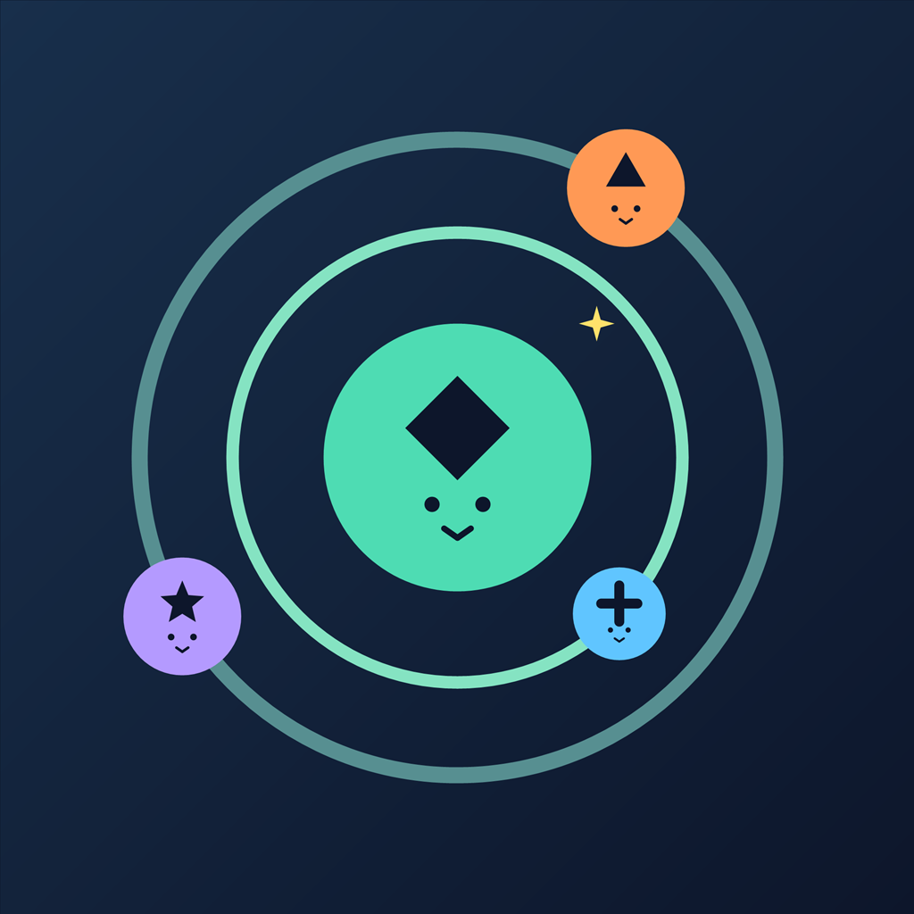

Pocket Orbit
A little space to unwind.
Eighteen little travellers. Three orbit rings. One happy homecoming.
Turn the rings to guide every friend to its matching symbol on the outer rim. Colour and shape help you find the way. Some rings pull their neighbours along, so a small turn can change the whole puzzle.
Explore a Sky Full of Puzzles
Discover 144 campaign orbits across six sectors. Start with gentle homecomings, then explore drifting homes, double-step rings, mirror gates and changing tides. Later puzzles bring familiar rules together in surprising combinations.
A Little Reason to Return
Set out on a three-stop daily voyage or follow your curiosity through Free Flight's continuing sequence of puzzles. There are no missed-day resets—your discoveries are yours to keep.
Build Your Constellation Collection
Discover twelve constellation drawings and their little stories in your Sky journal. Choose a favourite to display on your home sky.
Play at Your Own Pace
- No timer and no lives to lose.
- Unlimited undo and hints when you want a little help.
- Aim for a three-star solution or enjoy finding your own way home.
- Earn stardust through play and unlock different sky colours.
- Choose reduced motion and switch sound on or off.
- Tap a ring and turn, or swipe around its curve.
Small turns. Happy little homecomings.
Tap a ring and turn, or swipe around its curve. Rotate the three orbit rings to guide all eighteen travellers to their matching symbols on the outer rim.
Watch how the rings interact, use colour and shape to find the right destinations, and take your time solving each orbit.